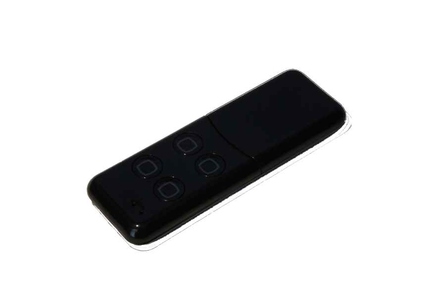
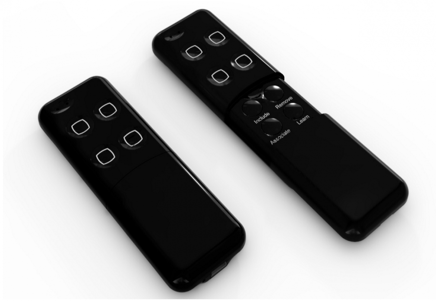

AEO_MREM_B
Firmware Version : 1.0 |
 |
Kurzinfo
R Dieses Gerät ist ein mobiler batteriebetriebener Z-Wave-Controller.
Die Minimote kann mittels der Netzsteuerfunktionen ein Z-Wave Netz managen. Mittels der "Learn"-Taste wird das Gerät in ein bereits bestehendes Netz als Sekundärcontroller eingefügt. 5 Sekunden langes Drücken der "Learn"-Taste weckt das Gerät auf.
Weitergehende Informationen finden sich in den jeweiligen Abschnitten dieses Handbuches.
Was ist Z-Wave?
Dieses Produkt entspricht dem Z-Wave-Standard. Z-Wave ist der internationale Funkstandard zur Kommunikation von Geräten im intelligenten Haus. Z-Wave-Geräte funken in Europa auf der Frequenz von 868.42 MHz.Z-Wave ermöglicht eine sichere und stabile Kommunikation indem jede Nachricht vom Empfänger rückbestätigt wird (Zweiwege-Kommunikation) und alle netzbetriebenen Geräte Nachrichten weiterleiten (Routing) können, wenn eine direkte Funkbeziehung zwischen Sender und Empfänger gestört ist.
Dank Z-Wave können Produkte unterschiedlicher Hersteller miteinander in einem Funknetz verwendet werden. Damit ist auch dieses Produkt mit beliebigen anderen Produkten anderer Hersteller in einem gemeinsamen Z-Wave Funknetz einsetzbar.
Z-Wave unterscheidet zwischen Controllern und Slaves. Slaves sind entweder Sensoren S, die Daten ermitteln oder Aktoren A, die Aktionen ausführen (Sensoren und Aktoren sind mitunter in einem Gerät vereint). Controller sind entweder statische netzgespeiste Controller C (auch IP-Gateways genannt) oder mobile batteriebetriebene Controller (Fernbedienungen, Batteriewandschalter)R. Damit ergeben sich eine Reihe prinzipieller Kommunikationsmöglichkeiten in einem Z-Wave-Netz:

- Controller steuern Aktoren.
- Aktoren melden Änderungen ihres Schaltzustandes
- Sensoren melden Messwerte oder Statusänderungen an Controller
- Sensoren steuern Aktoren direkt bei Ereignissen
- Aktoren steuern andere Aktoren
- Fernbedienungen erzeugen Ereignisse in einem statischen Controller, die zum Beispiel zum Steuern von Szenen genutzt werden
- Fernbedienungen steuern Aktoren
Controller können in einem Z-Wave Netzwerk zwei unterschiedliche Rollen einnehmen. Es gibt immer genau einen Primärcontroller der das Netzwerk steuert und Geräte in das Netzwerk inkludiert oder aus dem Netzwerk exkludiert. Dieser Controller kann weiter Nutzerfunktionen - zum Beispiel Tasten - besitzen. Alle anderen Controller mit Nutzerfunktionen erfüllen keine Managementaufgaben. Sie heißen Sekundärcontroller. Trotzdem verfügen sie - sozusagen als Backup - über alle notwendigen Informationen über das Netz. Das Übersichtsbild zeigt, das - batteriegestützt - Sensoren nicht direkt mit - batteriebetriebenen - Fernbedienungen kommunizieren. Sie senden nur Daten an statische Controller oder steuern Aktoren direkt.
Produktbeschreibung
Die Aeon Labs Mini Fernbedienung kann mit einer Vielzahl Z-Wave kompatibler Geräte eingesetzt werden, darunter Dimmer, Schalter oder Jalousiensteuerungen. Das Produkt ist im Vergleich zu Universalfernbedienungen mit Z-Wave-Support eher einfach gehalten, bietet aber dennoch eine ganze Reihe von Funktionen. Unter einer Schiebeabdeckung befinden sich vier dedizierte Tasten für die Netzsteuerung (Inklusion, Exklusion, Assoziation und Learning). Damit ist es ein idealer, kleiner, portabler Z-Wave-Controller für Anwender, die weder eine komplexe PC-Steuerung bedienen noch andere komplexere Automatisierungen realisieren möchten. Die Fernbedienung wird durch eine aufladbare Lithium-Batterie mit Strom versorgt. Durch den USB-Konnektor kann das Produkt somit an jedem USB Port eines PC oder Mac mit einem Standardkabel wieder aufgeladen werden. Das Produkt wird in der Farbe schwarz geliefert.
Sicherheitshinweis
Lesen Sie dieses Handbuch vor der Installation!
Achtung! Dieses Gerät wird mit 230 V Netzspannung betrieben. Beachten Sie die Sicherheitshinweise während der Installation. Vor Beginn der Installation müssen alle Anschlussleitungen potentialfrei sein. Weiterhin muss sichergestellt sein, dass während der Installation niemand die Spannung wieder zuschalten kann (Sicherung wieder aktivieren). Elektrische Arbeiten dürfen nur von einer Elektrofachkraft in Übereinstimmung mit den geltenden Regeln und Vorschriften durchgeführt werden.
Verwenden Sie das Gerät auf keine andere Weise als im Handbuch angegeben. Der Hersteller übernimmt keine Garantie für unsachgemäße Bedienung.
Installationsanleitung
Das Gerät ist im Auslieferungszustand einsatzbereit. Wenn beim Drücken der Tasten keine Reaktion der LEDs erfolgt, muss das Gerät mittels des mitgelieferten USB Kabels geladen werden.

Verhalten des Gerätes im Z-Wave Netz
I Im Auslieferungszustand ist das Gerät mit keinem Z-Wave-Netz verbunden. Damit es mit anderen Z-Wave Geräten kommunizieren kann, muss es in ein bestehendes Z-Wave Netz eingebunden werden. Dieser Prozess wird bei Z-Wave Inklusion genannt. Geräte können Netzwerke auch wieder verlassen. Dieser Prozess heißt bei Z-Wave Exklusion. Beide Prozesse werden von einem Controller gestartet, der dazu in einen Inklusion- bzw. Exklusion-Modus geschaltet werden muss. Das Handbuch des Controllers enthält Informationen, wie er in diese Modi zu schalten ist. Erst wenn der Controller des Z-Wave Netzes im Inclusion-Modus ist, können Geräte hinzugefügt werden. Das Verlassen des Netzes durch Exklusion führt zum Rücksetzen dieses Gerätes in den Auslieferungszustand.
Sobald sich der Primärcontroller im Inklusionmodus befindet, kann die Aeonlabs Minimote durch Drücken der "Learn" Taste in das Netz des Primärcontrollers inkludiert werden.
Bedienung des Gerätes
Die Minimote verfügt über 4 Tasten, die zur Steuerung von 4 verschiedenen Szenen eingesetzt werden. Bei einer Szene werden verschiedene andere Z-Wave Geräte genau in den vorher für die jeweilige Szene hinterlegten Schaltzustand geschaltet. Sie werden dazu mittels Assoziation der jeweiligen Szene hinzugefügt, die dann durch einfaches Drücken der entsprechenden Taste aktiviert wird.
Unter der Abdeckung befinden sich vier weitere Tasten, die dediziert zur Steuerung von Netzfunktionen verwendet werden. Die Minimote kann selbst ein Z-Wave Netz aufbauen und managen.
Kommunikation mit einem batteriebetriebenen Gerät
W Das Gerät ist batteriegespeist und damit in der Regel in einem Tiefschlafmodus um Strom zu sparen. Im Tiefschlafmodus kann das Gerät keine Funksignale empfangen. Daher wird ein (statischer) Controller benötigt, der netzgespeist und damit immer funkaktiv ist. Dieser Controller - zum Beispiel ein IP-Gateway - verwaltet eine Nachrichten-Mailbox für dieses batteriegespeiste Gerät, in dem Nachrichten an dieses Gerät zwischengespeichert werden. Ohne einen solchen statischen Controller wird die Nutzung dieses batteriebetriebenen Gerätes sehr schnell zur Entladung der Batterie führen oder die Nutzung ist komplett unmöglich.
Dieses Gerät weckt regelmäßig auf, meldet dies durch Aussenden einer sogenannten Wakeup-Notifikation und leert dann seine Mailbox im statischen Controller. Dafür muss bei der Inclusion die Node-ID des Controllers und ein Aufweckinterval definiert werden. Erfolgt die Inklusion durch einen statischen Controller wie zum Beispiel ein IP-Gateway, wird dieser Controller diese Konfiguration automatisch erledigen und in der Regel eine Nutzerschnittstelle anbieten, um das Aufweckinterval den Nutzerbedürfnissen anzupassen. Das Aufweckinterval ist ein Kompromiss zwischen maximaler Batterielaufzeit und minimaler Reaktionszeit des batteriegespeisten Gerätes.
Das Gerät wird durch Drücken der "LEARN" Taste für 5 Sekunden aufgeweckt.
Es ist möglich die Gerätenummer 255 als Zielgerät für die Wakeup-Notifikation anzugeben. In diesem Falle wird die Nachricht als Broadcast an alle Geräte mit direkter Funkverbindung gesendet. Dem Vorteil der sofortigen Benachrichtigung steht als Nachteil gegenüber, das das Gerät gegebenenfalls mehr Zeit im aktiven Modus und damit mehr Batterieladekapazität verbraucht.
Node Information Frame
NIF Der Node Information Frame ist die Visitenkarte eines Z-Wave Gerätes. Es ist ein spezielles Datenpaket, in dem der Gerätetyp sowie die Funktionen des Gerätes bekanntgemacht werden. Inklusion und Exklusion eines Gerätes wird von diesem mit einem Node Information Frame beantwortet. Zusätzlich kann der Node Information Frame für bestimmte Konfigurationsprozesse des Z-Wave Netzes - zum Beispiel das Setzen von Assoziationen - benötigt werden.
Das Drücken der "LEARN" Taste für 5 Sekunden am Gerät führt zum Senden eines Node Information Frame.
Assoziationen - wie werden andere Geräte gesteuert?
A Z-Wave Geräte können andere Geräte direkt steuern. Diese direkte Steuerung heißt in Z-Wave Assoziation. In den steuernden Geräten muss dazu die Geräte-ID des zu steuernden Gerätes hinterlegt werden. Dies erfolgt in sogenannten Assoziationsgruppen. Eine Assoziationsgruppe ist immer an ein Ereignis im steuernden Gerät gebunden (Tastendruck oder Auslösen eines Sensors). Bei Eintritt dieses Ereignisses wird an alle in einer Assoziationsgruppe hinterlegten Geräte ein Steuerkommando gesendet.
Assoziationsgruppen:
| 1 | Szene 1 (max. Anzahl Geräte: 5) |
| 2 | Szene 2 (max. Anzahl Geräte: 5) |
| 3 | Szene 3 (max. Anzahl Geräte: 5) |
| 4 | Szene 4 (max. Anzahl Geräte: 5) |
Setzen und Löschen von Assoziationsbeziehungen
SA Assoziationen können entweder per Funkkommando oder direkt am Gerät gesetzt werden.
- Die entspechende Szenentaste wird gedrückt und gedrückt gehalten.
- Aussenden eines Node Information Frames von dem Gerät, daß einer Assoziationsgruppe hinzugefügt werden soll. Die Information, wie ein Node Information Frame ausgesendet wird, steht im Handbuch des jeweiligen Gerätes.
- Beim Loslassen der Szenentaste wird der Status des assoziierten Gerätes ermittelt und in der Szene gespeichert. Soll die entsprechende Szene zum Beispiel einen Schalter einschalten, so muss dieser Schalter eingeschaltet sein, wenn die Szenentaste losgelassen wird.
Um ein Gerät aus einer Szene zu löschen, wird der Szenebutton gedrückt und ein Node Information Frame von dem bereits in der Szene befindlichen Gerät ausgesendet. Damit wird dieses Gerät aus der Szene gelöscht. Erneutes Ausführen dieser Operation fügt das Gerät der Szene wieder hinzu.
Spezielle Controllerfunktionen
So lang dieses Gerät nicht als Sekundärcontroller in das Netz eines anderen Z-Wave Controllers inkludiert wurde, kann es selbst als Primärcontroller (Systemverwalter) ein Z-Wave-Netz aufbauen und managen. Dies beinhaltet das Inkludieren und Exkludieren von Geräten, das Erstellen und Löschen von Assoziationen sowie die Reorganisation des Netzes. Die folgenden Funktionen werden von diesem Controller unterstützt:
Inklusion von Geräten in das eigene Z-Wave-Netz
CI Zwei Z-Wave Geräte können nur dann miteinander kommunizieren, wenn sie sich in einem gemeinsamen Netz befinden. Der Vorgang, ein Gerät in ein Z-Wave Netz einzufügen heisst bei Z-Wave Inklusion und wird immer von einem Controller gestartet. Dieser wird dazu in den sogenannten Inklusion-Modus geschaltet. Die Inklusion wird durch das zu inkludierende Gerät bestätigt, meist durch Betätigen einer Taste.
Drücken der Inklusion Taste schaltet die Fernbedienung in den Inklusionmodus.
Sollte die Inklusion fehlschlagen, empfielt sich, das Gerät durch Exklusion in den Auslieferungszustand zurückzuversetzen und der Vorgang zu wiederholen.
Exklusion von Geräten aus dem eigenen Z-Wave-Netz
Der Controller kann Geräte aus dem Z-Wave-Netz entfernen. Durch diese Exklusion wird die Verbindung zwischen dem Gerät und dem Controller beendet und es ist keine Kommunikation mehr möglich. Für eine Exklusion wird der Controller in den Exclusion-Modus geschaltet und die Exclusion am Gerät - meist durch einen Tastendruck bestätigt.
Achtung: Das Entfernen eines Gerätes aus einem Netz setzt dieses Gerät wieder in den Auslieferungszustand zurück. Ein Gerät kann von jedem Controller zurückgesetzt (exkludiert) werden, auch wenn es vorher zu einem anderen Netz gehört hat.
Drücken der Exklusion Taste schaltet die Fernbedienung in den Exklusionmodus.
Übergabe der Primärcontrollerrolle an einen neuen Controller
Dieses Gerät kann seine Primärcontrollerfunktion an einen anderen in das Netz zu includierenden Controller übergeben.
Die Übergabe der Primärcontrollerrolle wird eingeleitet, indem die "Learn"-Taste gedrückt wird.
Setzen von Assoziationen zwischen zwei Geräten
CA Der Controller ist in der Lage, Assoziationen zwischen zwei Geräten im Netz zu erstellen. Dazu wird einen Assoziationmodus gestartet und Quelle und Ziel der Assoziation werden dem Controller bekanntgemacht. Dazu ist dan den Geräten genau die Operation durchzuführen, zu für eine Inclusion durchzuführen ist. Sind beide Assoziationspartner bekannt, wird der Controller selbständig die Assoziation im Quellgerät in Richtung des Zielgerätes setzen und den Modus beenden.
- Drücken der "Association" Taste.
- Aussenden eines Node Information Frames von dem Gerät, das einer Assoziationsgruppe hinzugefügt werden soll. Die Information, wie ein Node Information Frame ausgesendet wird, steht im Handbuch des jeweiligen Gerätes.
- Aussenden eines Node Information Frames von dem Gerät, in dessen Assoziationsgruppe das Gerät hinzugefügt werden soll. Die Information, wie ein Node Information Frame ausgesendet wird, steht im Handbuch des jeweiligen Gerätes.
Aktualisierung der Netzdaten
Als System-Controller kann dieses Gerät das gesamte Netz neu organisieren, um Positionsänderungen oder ausgefallene Geräte zu erkennen. Dabei werden alle Geräte sowie ihre Position im Netz neu ermittelt und gespeichert.
Drücken der Taste "Assoziation" für 10 Sekunden.
Rücksetzen des Controllers
Drücken der Tasten "Assoziation" und "Learn" für 10 Sekunden.
Konfigurationseinstellungen
Z-Wave Produkte können direkt nach der Inklusion im Netz verwendet werden. Durch Konfigurationseinstellungen kann das Verhalten des Gerätes jedoch noch besser an die Anforderungen der Anwendung angepasst und zusätzliche Funktionen aktiviert werden.
WICHTIG: Manche Steuerungen erlauben nur die Konfiguration von vorzeichenbehafteten Werten zwischen -128 und 127. Um erforderliche Werte zwischen 128 und 255 zu programmieren, muss der gewünschte Wert minus 256 eingegeben werden. Beispiel: um einen Parameter auf einen Wert von 200 zu setzen, müsste der Wert 200-256 = -56 eingegeben werden, wenn nur positive Werte bis 128 akzeptiert werden. Bei Werten von 2 Byte Länge wird die gleiche Logik angewandt: Werte über 32768 werden als negative Werte angegeben
| Wert | Beschreibung |
|---|---|
| 0 | Standardmode lt Hersteller (Voreingestellt) |
| 1 | als Szenenumschalter |
| 2 | Taste des Include-Modus |
| 3 | Taste des Exclude-Modus |
| 4 | Taste des Associationsmodus |
| 5 | Taste des Lernmodus |
| Wert | Beschreibung |
|---|---|
| 0 | Standardmode lt Hersteller (Voreingestellt) |
| 1 | als Szenenumschalter |
| 2 | Taste des Include-Modus |
| 3 | Taste des Exclude-Modus |
| 4 | Taste des Associationsmodus |
| 5 | Taste des Lernmodus |
| Wert | Beschreibung |
|---|---|
| 0 | Standardmode lt Hersteller (Voreingestellt) |
| 1 | als Szenenumschalter |
| 2 | Taste des Include-Modus |
| 3 | Taste des Exclude-Modus |
| 4 | Taste des Associationsmodus |
| 5 | Taste des Lernmodus |
| Wert | Beschreibung |
|---|---|
| 0 | Standardmode lt Hersteller (Voreingestellt) |
| 1 | als Szenenumschalter |
| 2 | Taste des Include-Modus |
| 3 | Taste des Exclude-Modus |
| 4 | Taste des Associationsmodus |
| 5 | Taste des Lernmodus |
| Wert | Beschreibung |
|---|---|
| 0 | Standardmode lt Hersteller (Voreingestellt) |
| 1 | als Szenenumschalter |
| 2 | Taste des Include-Modus |
| 3 | Taste des Exclude-Modus |
| 4 | Taste des Associationsmodus |
| 5 | Taste des Lernmodus |
| Wert | Beschreibung |
|---|---|
| 0 | Standardmode lt Hersteller (Voreingestellt) |
| 1 | als Szenenumschalter |
| 2 | Taste des Include-Modus |
| 3 | Taste des Exclude-Modus |
| 4 | Taste des Associationsmodus |
| 5 | Taste des Lernmodus |
| Wert | Beschreibung |
|---|---|
| 0 | Standardmode lt Hersteller (Voreingestellt) |
| 1 | als Szenenumschalter |
| 2 | Taste des Include-Modus |
| 3 | Taste des Exclude-Modus |
| 4 | Taste des Associationsmodus |
| 5 | Taste des Lernmodus |
| Wert | Beschreibung |
|---|---|
| 0 | Standardmode lt Hersteller (Voreingestellt) |
| 2 | Taste des Include-Modus |
| 3 | Taste des Exclude-Modus |
| 4 | Taste des Associationsmodus |
| 5 | Taste des Lernmodus |
Kommandoklassen
Unterstützte Kommandoklassen- Basic (Version 1)
- Association (Version 2)
- Version (Version 1)
- All Switch (Version 1)
- Manufacturer Specific (Version 1)
- Configuration (Version 0)
- Meter (Version 2)
- Binary Switch (Version 1)
Technische Daten
| Explorer Frames | Ja |
| SDK | 4.50 beta |
| Geräteart | Slave with routing capabilities |
| Allgemeiner Z-Wave-Gerätetyp | Binary Switch |
| Spezieller Z-Wave-Gerätetyp | Binary Power Switch |
| Router | Ja |
| FLiRS | Nein |
| Firmware Version | 1.0 |
Erläuterung Z-Wave-spezifischer Begriffe
- Controller... ist ein Z-Wave-Gerät mit erweiterten Fähigkeiten zur Verwaltung eines Netzes. Dies sind in der Regel Gateways oder Fernbedienungen. Batteriegespeiste Wandschalter können auch Controller sein.
- Slave... ist ein Z-Wave-Gerät mit erweiterten Fähigkeiten zur Verwaltung eines Netzes. Es gibt Sensoren, Aktoren und auch Fernbedienungen als Slaves.
- Primärcontroller (engl. Primary Controller)... ist der zentrale Netzverwalter des Z-Wave-Netzes.
- Inklusion (eng. Inclusion)... ist der Prozess des Einbindens eines neuen Gerätes ins Z-Wave-Netz.
- Exklusion (engl. Exclusion)... ist der Prozess des Entfernens eines Gerätes aus dem Z-Wave-Netz.
- Assoziation (engl. Association)... ist eine Steuerbeziehung zwischen einem steuernden und einem gesteuerten Gerät. Die Information dazu wird im steuernden Gerät in einer Assoziationsgruppe hinterlegt.
- Wakeup Notifikation (engl. Wakeup Notification) ... ist eine spezielle Funknachricht, mit der ein batteriegespeistes Gerät bekanntmacht, daß es im Aufwachstatus ist und Z-Wave-Nachrichten empfangen kann.
- Node Information Frame... ist eine spezielle Funknachricht, mit der ein Z-Wave-Gerät seine Geräteeigenschaften bekanntgibt.
Entsorgungshinweis
Dieses Gerät enthält keine Batterien.
Das ist ein elektrisches Gerät. Es kann kostenfrei bei entsprechenden Annahmestellen abgegeben werden.